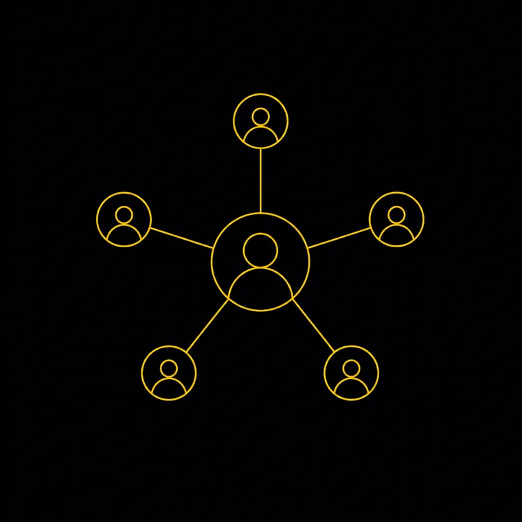
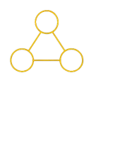

GBS
Fundamentals
Models, governance, metrics, and strategy. The foundation everything else builds on.
Most people arrive in a GBS role and figure out how it works by observing. Nobody hands you a primer on how the model actually functions — the difference between a cost center and a value driver, how governance is structured, what the metrics actually mean. This pillar covers the structural reality of GBS environments.
Understand how the center works, so you can perform instead of guessing.
Most people start in GBS and learn the basics by watching others. No one gives you a clear picture of how the model works, how it is governed, and what its numbers mean. Without that picture, you cannot tell if you are doing well, or where the real opportunities are.
- Name your operating model (captive, outsourced, or hybrid) and explain how your center is set up.
- Read the core numbers — service levels (SLA), key results (KPI), and cost-to-serve — and know what good looks like.
- Explain how decisions are governed, so you know who owns what.
Anyone in their first year in GBS, or anyone who joined from another function and never got the primer.
Cluster Guides

The first few months in GBS move fast, and nobody hands you a step-by-step career manual. That's normal, and it's manageable once you understand how the system works.
- The workload is real, the learning curve is steep. Entry-level compensation follows structured bands, bonuses often kick in after six months, and salary growth ties to company performance as much as individual results.
- The career path exists. It's usually on a slide somewhere. But the how to get there is what separates people who progress from those who wait. That's the gap this platform closes.
- Start by understanding where your strengths are, where your gaps are relative to peers, and what the next role actually requires. Career management is a skill, and the earlier you build it, the further ahead you'll be.

1.1 GBS Model and ContextThese three terms get used interchangeably, but they describe fundamentally different operating models:
- A shared service center consolidates transactional work.
- A GBS organization integrates end-to-end processes with governance authority.
- A COE provides specialized expertise without owning execution.
Knowing where your organization sits on this spectrum tells you what career levers you actually have.
Read full guide →Three models, three very different realities:
- Captive — your company owns and operates the center.
- Outsourced (BPO) — a third party runs it.
- Hybrid — some combination, which is where most large enterprises actually land.
Each model has different implications for career progression, job security, and the skills that get valued.
Read full guide →In a landlord model, GBS provides the hub — facilities, infrastructure, HR support, reporting — while business units keep solid-line ownership of the people, processes, and delivery risk. Quick to set up, hard for GBS to prove value in. Many people work inside this model without knowing it has a name, and which line is solid determines who decides your career.
Read full guide →Choosing where to place a GBS hub is a multi-variable equation — labor cost, talent availability, time zone coverage, language capability, infrastructure, and political stability. The decision looks rational on a spreadsheet but plays out over 10-15 years, during which governments change, currencies shift, and talent markets tighten. The best hub strategies build in optionality.
Read full guide →In a GBS environment, your business partners are internal — they sit in the same company but operate as quasi-clients. The dynamic is different from true external client relationships: they can escalate through management chains, they have opinions about how you do the work, and they rarely see you as a vendor they chose. Managing this requires a different skill set than traditional customer service.
Read full guide →1.2 Value and Strategy
Most GBS organizations start as cost centers — the pitch is labor arbitrage and consolidation savings. The ones that survive long-term make the shift to value creation: process improvement, data insights, automation enablement, and strategic advisory. If your GBS is still justifying its existence through headcount savings five years in, leadership is already looking at the next outsourcing option.
Read full guide →TCO captures everything — infrastructure, technology, management overhead, transition costs, and ongoing run costs. Cost-to-serve measures what it costs to deliver a specific service to a specific business unit. Most GBS business cases use TCO to justify the initial investment but never build a cost-to-serve model that tracks ongoing efficiency. That gap is where promised savings quietly disappear.
Read full guide →GBS organizations sit on some of the richest process data in the enterprise — transaction volumes, cycle times, exception rates, payment patterns. The monetization play is not selling data externally; it is using that data to justify budget, prove value, and win new scope. A GBS that can show the CFO exactly where process inefficiency costs money does not get questioned at budget time.
Read full guide →1.3 Governance and Structure
In a GBS, you will almost certainly report to two people — a functional leader and a service delivery leader. The matrix is how GBS organizations balance global standardization with local responsiveness. Your career progression depends on knowing:
- who controls your performance rating
- who controls your budget
- who controls your next role
They are rarely the same person.
Read full guide →The GPO is responsible for end-to-end process performance across all geographies. On paper, that sounds powerful. In practice, GPOs often have accountability without authority — they own the process design but cannot force local business units to adopt it. Effective GPOs build influence through data, governance forums, and executive sponsorship rather than org chart hierarchy.
Read full guide →An MSP relationship is not a set-and-forget outsourcing deal. It requires active vendor governance — performance reviews, SLA monitoring, relationship management, and continuous renegotiation. The biggest risk is knowledge asymmetry: the MSP understands your processes better than you do because they run them daily. Without investing in retained knowledge, you lose the ability to challenge their pricing or performance.
Read full guide →Every GBS professional should understand three contract mechanics:
- SLAs define what "good" looks like and trigger penalties or bonuses.
- Termination clauses determine your exit options if the relationship fails.
- Benchmarking clauses give you the right to compare pricing against market rates.
Most people only read these after something goes wrong — by which point the leverage has already shifted.
Read full guide →1.4 Performance Metrics
Four acronyms appear in every GBS conversation, and they measure different things:
- SLA — the contractual promise.
- KPI — the performance indicator.
- TAT — turnaround time.
- FTE — the staffing metric.
Confusing them — reporting a KPI when someone asked for an SLA — signals that you do not understand the operating model you work in.
Read full guide →Two kinds of KPI, and most scorecards lean the wrong way:
- Lagging — what already happened: invoices processed, tickets closed, errors found.
- Leading — what will happen: aging queues, training completion rates, process exception trends.
Most GBS scorecards are 90% lagging, so leadership only finds out about problems after they have already hit the business.
Read full guide →An executive dashboard is a narrative, not a data dump. The best GBS dashboards answer three questions in under 30 seconds:
- Are we on track?
- Where are the risks?
- What decision do you need to make?
If your dashboard needs a 20-minute walkthrough to understand, you have built a report, not a decision tool.
Read full guide →The leap from operational reporting to strategic insight is the single biggest career differentiator in GBS. Same data, different altitude:
- Operational — "AP processing time averaged 4.2 days."
- Strategic — "Early payment discount capture dropped 12% because processing delays shifted 340 invoices past the discount window, costing the business $2.1M this quarter."